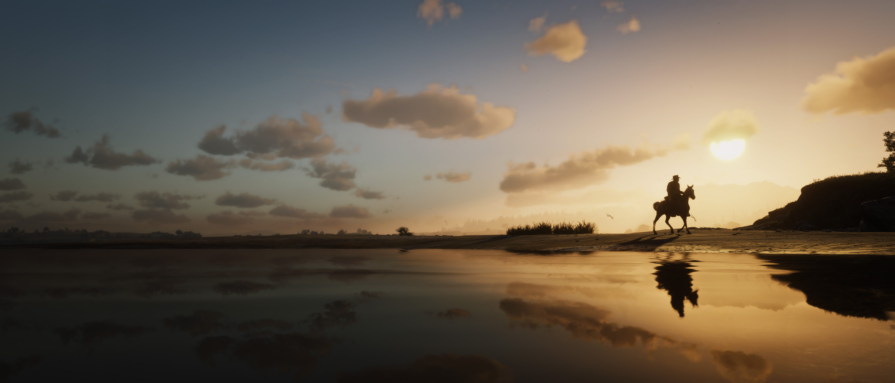

Blogs › Red Dead Redemption 2: un mundo que se siente vivo

Red Dead Redemption 2: un mundo que se siente vivo
No todos los videojuegos necesitan llevarte constantemente de una misión a otra. Red Dead Redemption 2 demuestra que explorar, observar y perderse en su enorme mundo puede ser igual de importante que seguir la historia principal.
1. Un mundo lleno de detalles: cada ciudad, bosque y pueblo tiene personajes, animales y eventos que hacen que el mundo se sienta vivo.
2. Una historia memorable: Arthur Morgan protagoniza una historia marcada por la lealtad, los cambios y el final de una época.
3. Exploración sin límites: puedes encontrar secretos, encuentros inesperados y lugares ocultos lejos de las misiones principales.
4. Un western moderno: Rockstar consiguió crear una experiencia que mezcla acción, aventura y una ambientación inspirada en el lejano oeste.
5. Cada partida es diferente: pequeños detalles y decisiones pueden hacer que cada jugador viva experiencias distintas durante su aventura.
Red Dead Redemption 2 no es solo un juego sobre vaqueros: es un mundo diseñado para perderse durante horas.